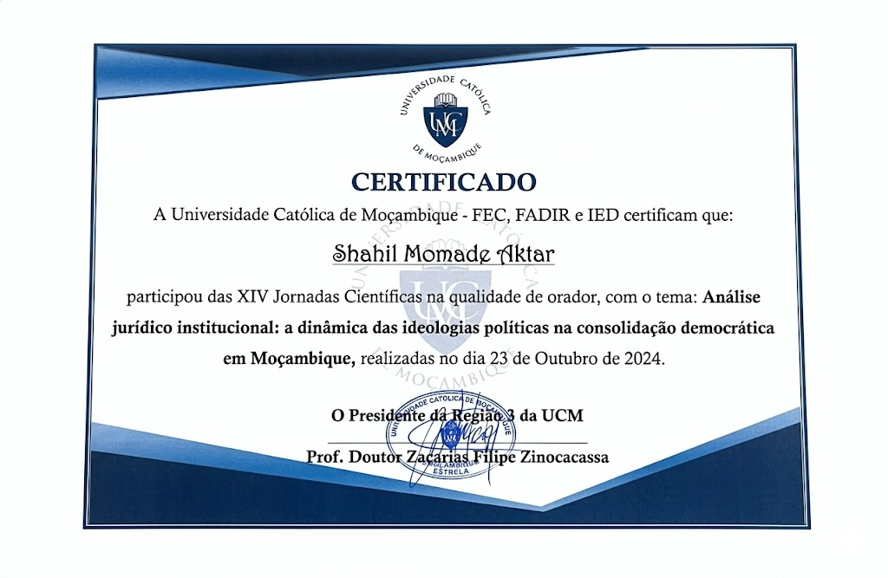
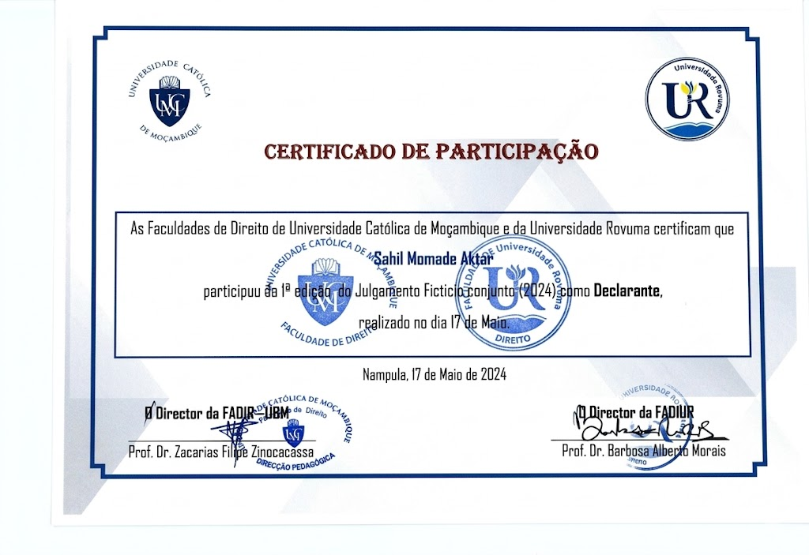
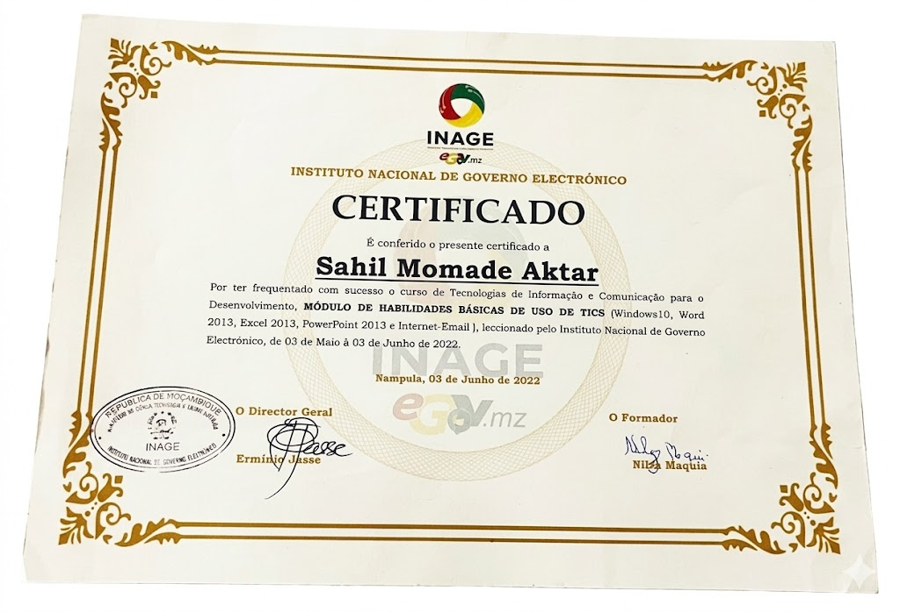
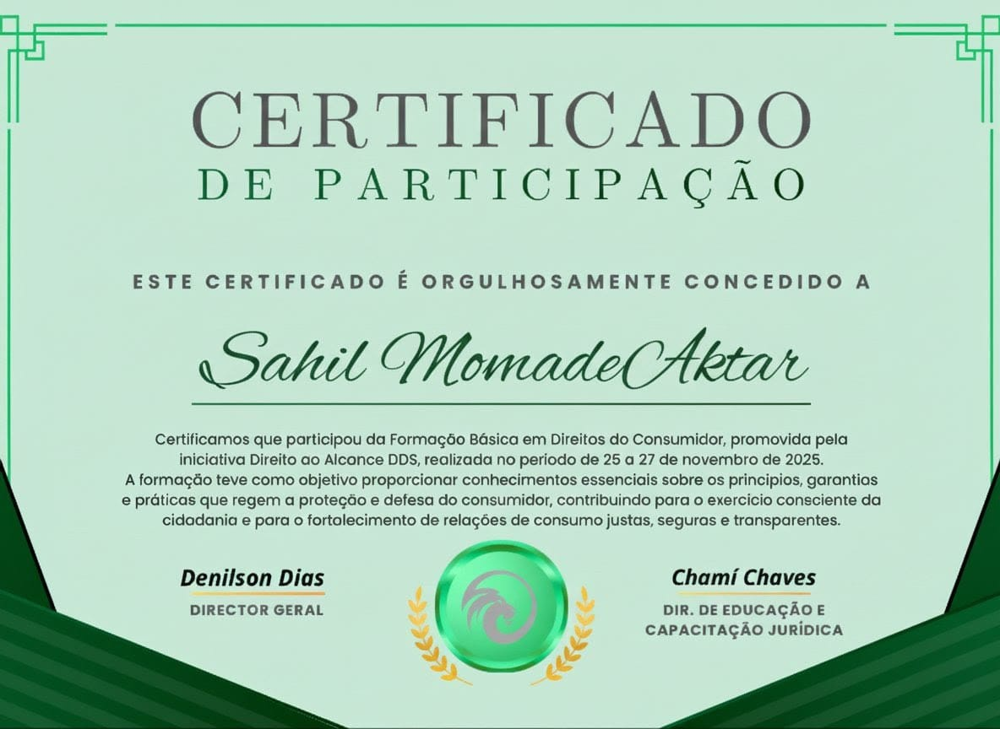
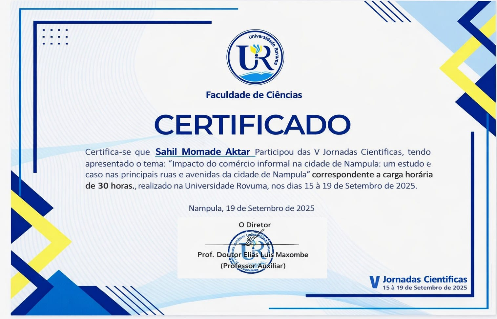
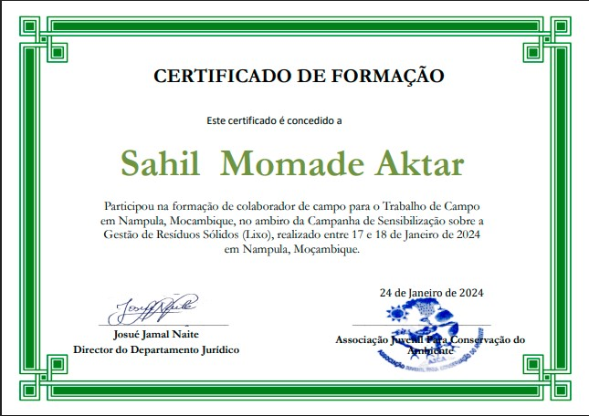

Sahil Aktar
Estudante de Tecnologia de InformaçãoUniversidade Católica de Moçambique
3º ano
Nampula, Moçambique
sahilmomadeaktar88@gmail.com
87 474 4305 / 83 397 5920
Desenvolvedor em formação
A tecnologia é uma ferramenta poderosa para criar soluções úteis, melhorar processos e contribuir para o desenvolvimento da nossa sociedade.
— Sahil Aktar
Sobre Mim
Olá. Chamo-me Sahil Aktar e sou estudante do 3º ano do curso de Tecnologia de Informação na Universidade Católica de Moçambique.
Tenho interesse pelo desenvolvimento de sistemas e páginas web, com conhecimentos em PHP, Java, JavaScript, HTML5, CSS3 e MySQL.
Procuro desenvolver projectos simples, funcionais e bem organizados, com foco na utilidade prática, na boa apresentação visual e na resolução de problemas reais.
PHP
Desenvolvimento web
Java
Sistemas desktop
JavaScript
Interactividade
MySQL
Base de dados
Formação Académica
Ensino Primário
Escola Primária Completa 7 de Abril
Ensino Secundário
Escola Secundária de Nampula
Licenciatura em Tecnologia de Informação
Universidade Católica de Moçambique
Actualmente no 3º ano.
Habilidades Técnicas
Linguagens
Desenvolvimento Web
Base de Dados
Projectos
Sistema de Gestão e Venda de Carros
Sistema demo em PHP para cadastro de viaturas, clientes, stock, preços e vendas.
Sistema de Gestão - Bottle Store
Sistema web para controlo de vendas, stock e relatórios.
Website Salão Saima'beauty
Website responsivo com serviços, galeria e formulário de agendamento.
Clínica Vitalis Prime
Site institucional desenvolvido para a disciplina de Fundamentos de Páginas Web.
Certificações
XV Edição das Jornadas Científicas da UCM
Orador(a) • Tema: “A Ética como fundamento para consolidação do Estado de Direito em Moçambique” • 01 de Outubro de 2025

XIV Jornadas Científicas da UCM
Orador • Tema: “Análise jurídico institucional: a dinâmica das ideologias políticas na consolidação democrática em Moçambique” • 23 de Outubro de 2024

1ª Edição do Julgamento Fictício Conjunto
Faculdades de Direito da UCM e da Universidade Rovuma • Declarante • 17 de Maio de 2024
Maratona de Inovação Tecnológica
Orador(a) • Tema: “Desenvolvimento de um Sistema Web para Arquivo Digital de Trabalhos de Conclusão de Curso” • 15 de Outubro de 2025

Habilidades Básicas de Uso de TICs
INAGE • Tecnologias de Informação e Comunicação para o Desenvolvimento • 03 de Junho de 2022
Formação Básica em Direitos Humanos
Direito ao Alcance DDS • 21 a 23 de Outubro de 2025

Formação Básica em Direitos do Consumidor
Direito ao Alcance DDS • 25 a 27 de Novembro de 2025
Fundamentos da Dependência Económica em África
Direito ao Alcance DDS • 16 a 18 de Dezembro de 2025
Formação Básica em Direitos Humanos
Direito ao Alcance DDS • Certificado complementar

V Jornadas Científicas
Universidade Rovuma • Tema: “Impacto do comércio informal na cidade de Nampula” • 15 a 19 de Setembro de 2025
Lei vs Casamento Tradicional (Tradição)
Direito ao Alcance Mz • 23 a 25 de Fevereiro de 2026

Gestão de Resíduos Sólidos
Colaborador de campo • Campanha de sensibilização • Nampula • 17 a 18 de Janeiro de 2024
Vamos trabalhar juntos
Estou disponível para colaborar em projectos académicos e profissionais.
Entrar em contacto